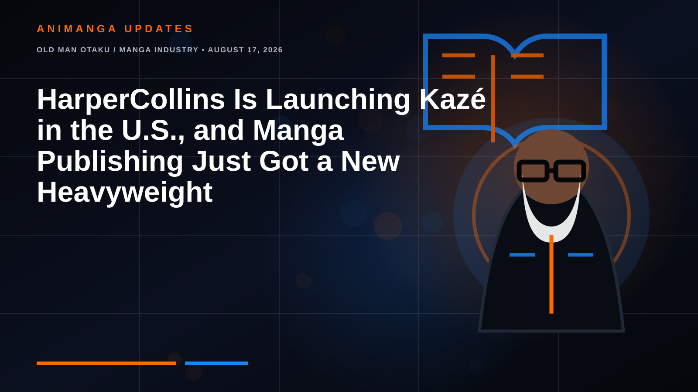

OLD MAN OTAKU / MANGA INDUSTRY • AUGUST 17, 2026
HarperCollins Is Launching Kazé in the U.S., and Manga Publishing Just Got a New Heavyweight
This is bigger than seven new licenses. One of the world's largest trade publishers is building a dedicated U.S. manga imprint around a brand with decades of European history.

The English-language manga market is getting another serious player.
HarperCollins is launching Kazé as a dedicated U.S. manga imprint, according to publishing-industry reporting from ICv2. The new line is expected to publish manga across a broad readership, from children's titles through books aimed at adults, with its first seven licenses scheduled to be revealed later in 2026.
Seven licenses by themselves would be ordinary manga news. A publisher the size of HarperCollins establishing an entire manga imprint is not.
This is infrastructure. Editorial staff, licensing relationships, production, distribution, marketing and shelf space can all follow. That is why Kazé's American arrival deserves to be treated as an industry story rather than simply another licensing roundup.
This Is Not HarperCollins Discovering Manga for the First Time
There is an important distinction here. HarperCollins already has manga activity in the United States, including manga and adult graphic novels associated with HarperAlley. Publishers Weekly's June 2026 reporting on HarperCollins U.S. Trade's restructuring specifically described HarperAlley's manga and adult graphic-novel list as part of Jennifer Hart's responsibilities.
So the story is not that HarperCollins suddenly noticed manga in August 2026.
The story is that manga is now getting a dedicated U.S. imprint with its own recognizable brand.
That suggests a more deliberate strategy than occasionally adding manga to a broader comics or graphic-novel program.
Kazé Already Has a History
The Kazé name is new to this particular U.S. publishing push, but it is not a newly invented manga label.
Kazé has deep roots in the European anime and manga business. Its publishing operations passed through the VIZ Media Europe era and later Crunchyroll. In 2022, the Kazé manga identity was folded into the Crunchyroll brand.
Then the ownership map changed again.
In 2025, HarperCollins acquired Crunchyroll's manga publishing operations in France and Germany. Those businesses became Pegasus Manga companies under HarperCollins, while Crunchyroll retained its anime-related streaming, home-entertainment and merchandise businesses.
HarperCollins subsequently announced that the manga publishing brand would return to the historic KAZÉ name. New European releases began carrying the revived branding from April 2026.
HarperCollins' own announcement described the revival as the beginning of an effort to take Kazé to an international, multinational level. A U.S. imprint makes that earlier language considerably more interesting now.
Why HarperCollins Changes the Equation
Manga licensing is only one part of publishing manga successfully in North America.
A publisher also needs translation, editing, lettering, design, printing, digital production, retailer relationships, marketing and reliable distribution. Those unglamorous pieces are often what separate a promising license announcement from books that readers can consistently find.
HarperCollins already operates a huge trade-publishing machine. The company has publishing operations around the world, a massive backlist and established relationships across physical and digital bookselling.
Kazé therefore does not have to build every piece of the American publishing apparatus from zero.
That does not guarantee success. Manga readers are unusually attentive to translation quality, physical editions, release schedules, pricing and whether a publisher actually finishes the series it licenses. But HarperCollins can give the imprint something every new entrant wants: scale.
The U.S. Manga Shelf Is Already Crowded
Kazé will not arrive in an empty market.
English-language readers already have major established manga publishers and imprints competing for licenses, including VIZ Media, Kodansha, Yen Press, Seven Seas and others. Some have spent decades building recognizable identities with readers.
That means HarperCollins' size alone will not make Kazé essential.
The first seven licenses will tell us far more.
Are they high-profile adaptations with immediate name recognition? Underserved genres? Children's manga designed to exploit HarperCollins' enormous reach into general bookstores? Prestige adult works? Digital-first experiments? A mixture of all of them?
The answers will reveal whether Kazé is trying to become a broad manga house, occupy a particular niche or use several different audiences as entry points.
The Children's-to-Adult Strategy Is Worth Watching
One detail in the reported announcement deserves extra attention: Kazé is not being framed around a single demographic.
A line stretching from children's manga through adult readership potentially allows HarperCollins to treat manga as a publishing format serving many audiences rather than as one youth category.
That sounds obvious to longtime manga readers. The Japanese market has always encompassed enormous differences in age, genre and audience. American retail shelving has not always communicated that diversity particularly well.
A major general trade publisher has an opportunity to put manga in front of readers who do not necessarily begin their book shopping inside the manga aisle.
Whether Kazé actually exploits that opportunity will depend on its licenses and marketing.
The European Kazé Gives the U.S. Imprint a Head Start
The revived European operation also means HarperCollins is not approaching manga licensing without institutional experience.
Pegasus Manga's German operation describes an in-house production chain covering translation, editing and graphic design, alongside direct relationships with major retail channels. Its catalog lineage includes major properties published through the former Kazé and Crunchyroll Manga operations.
That does not mean every European license can simply be transferred into English. Manga rights are negotiated by territory and language, and American licenses will need their own agreements.
But the broader organization already knows the machinery of manga publishing. That is a considerably stronger starting point than a conventional publisher attempting to improvise a manga department from scratch.
Seven Mystery Licenses Could Tell Us Everything
Right now, the most tantalizing part of the announcement is also the part we do not know.
What are the seven titles?
That reveal will function almost like Kazé's mission statement.
If the list is dominated by recognizable commercial properties, HarperCollins may be signaling an aggressive fight for mainstream manga buyers. If it contains unusual or critically acclaimed works that have struggled to receive English editions, Kazé could establish itself through curation. If children's manga occupies a major portion of the launch, HarperCollins may be targeting a part of the market where its existing publishing relationships are especially powerful.
And if the seven books deliberately cover multiple age groups and genres, that would reinforce the idea that Kazé intends to become a broad publishing line rather than a boutique experiment.
More Competition Can Be Good for Manga Creators and Readers
Another well-funded publisher competing for manga rights could make the licensing market more competitive. That can be complicated for publishers, but a larger pool of serious buyers also creates more possible routes for Japanese works to reach English-speaking readers.
There are thousands of manga that never receive official English print editions. No single publisher can license all of them.
A successful Kazé will not merely reshuffle books that would have been licensed anyway. The more interesting possibility is that HarperCollins identifies audiences or titles its competitors are not already serving.
That is where an additional publisher actually expands the market instead of simply dividing it.
The Old Man Otaku Take
The seven licenses will get the flashy headlines when HarperCollins finally reveals them. I am more interested in the logo sitting above those books.
Kazé gives HarperCollins a dedicated manga identity, decades of European brand history and a bridge to publishing expertise it acquired through the former Crunchyroll manga operations.
Meanwhile, HarperCollins supplies the part that is much harder to manufacture: the muscle of one of the world's largest trade publishers.
That combination does not automatically create another VIZ or Kodansha. Readers still have to trust the translations, like the licenses, accept the pricing and keep buying the books.
But this is exactly why the announcement matters before we even know title number one.
RogueVerse takeaway: HarperCollins is not merely licensing seven manga. It is building a dedicated American manga lane. The first seven titles will tell us how fast it intends to drive.
Third-party names and marks are used for editorial reporting. RogueVerse Studio is not affiliated with HarperCollins, Kazé, Pegasus Manga or the publishers discussed above.